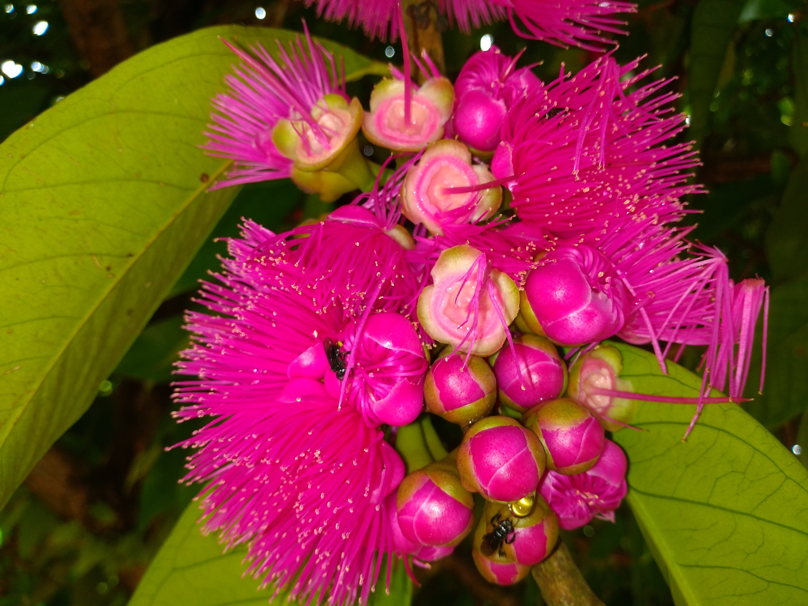

Olá, Mundo!
O meu nome é Filipe Gomes de Melo, eu sou aluno do primeiro período do curso de Ciência da Computação do Centro de Informatica da Universidade Federal de Pernambuco, e esse é o meu projeto de Desenvolvimento Web para a disciplica de Introdução à Computação!
Hobbies

Eu gosto bastante de desenhar e tenho trabalhado com mídia digital no meu tempo livre por pouco mais de dois anos. Eu uso uma mesa digitalizadora Wacom Intuos S e softwares como Krita e Fire Alpaca, ambos ótimos programas de pintura digital gratuitos.
PIBIC-EM
Durante o primeiro e segundo ano do ensino médio, eu fiz parte do Programa Institucional de Bolsas de Iniciação Científica para o Ensino Médio, nesse período eu trabalhei com a caracterização dos extratos de flores do Syzygium malaccense (jambeiro vermelho) e seu emprego como indicador natural de pH com Profa. Dra. Ana Paula Silveira Paim e Profa. Dra. Ana Maria Alves de Souza no Colêgio de Aplicação do CE da UFPE.
Tchau, Mundo!
Obrigado por ter visitado o meu Projeto Web! Espero que você tenha gostado! Eu não tenho muitas coisas para colocar aqui ainda, mas espero ter muito mais com o decorrer da minha vida acadêmica no CIn. Até logo!